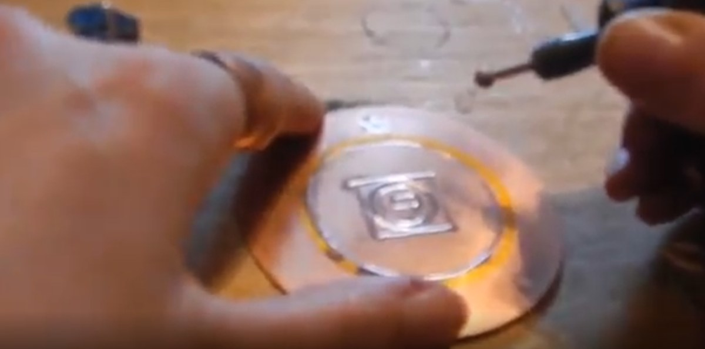

Enochian.org companion
Key of Solomon Pentacle Finder
Which pentacle for which purpose, from the 44 pentacles in Mathers, plus the general pentacle.
Finder
Type a purpose in plain words, for example love, treasure, travel, protection, dreams, or health.
What this Finder covers
The 44 pentacles: Saturn 7, Jupiter 7, Mars 7, Sun 7, Venus 5, Mercury 5, and Moon 6, plus the general pentacle, listed separately.
Seal images are now included, from Athena's own Drive GIFs, matched by planet and ordinal. No seal was drawn, copied from another source, or faked for this app.
Shop links will be added after a live page check. No shop URL is included in v1.
Browse by planet
Choose a planet, then tap a pentacle for its full purpose, metal, and colour.
Planetary hours
Pentacles are made in the day and hour proper to the planet, per Mathers, chapter 18. This tab uses the same unequal-hour method as the Grimoire Companion: sunrise to sunset divided into 12 day hours, sunset to next sunrise into 12 night hours, following the Chaldean sequence Saturn, Jupiter, Mars, Sun, Venus, Mercury, Moon.
Times use the clock and time zone on this device. Nothing is sent anywhere. Near the polar circles, sunrise or sunset may not occur on a selected date.
Choose a date and location, then calculate.

Main image: Athena engraving the 5th Pentacle of Venus, on copper. Photo from her own video still.
About and source
Purposes follow S. L. MacGregor Mathers, The Key of Solomon the King, for Athena to approve or replace with her own edition.
Planet metal and colour follow Mathers, chapter 18 only:
Saturn: lead, black. Jupiter: tin, celestial blue. Mars: iron, red. Sun: gold, yellow. Venus: copper, green. Mercury: mixed metals, mixed colours. Moon: silver, silver.
Seal images: created by Athena at enochian.org, using the Mathers plates as a base. One image per pentacle, matched by planet and ordinal, in her own coloured versions. No seal was invented for this app.
App idea: Athena's own. This Finder, its purpose-first layout, and its choice of pentacles come from her, at enochian.org.
Only these pentacles are marked as sold by Enochian.org, based on her live KEEP_LIVE catalog: 1st Pentacle of Saturn, 1st Pentacle of the Sun, and 1st to 5th Pentacles of Venus. Other pentacles in this Finder are reference only, and are not marked as sold.
Shop links will be added after a live page check.
Planetary hours: ported from the Grimoire Companion's timing code, same unequal-hour method, sunrise to sunset and sunset to next sunrise, Chaldean sequence. No astrology section was added, per Athena's correction: this is planetary timing for the pentacles, not a horoscope or chart section.
This is a website-first PWA, version 2.3, with images, the engraving main image, planetary hours, and Athena's image and idea credit. It is not a Play package, and nothing in this build posts anything or changes the shop.